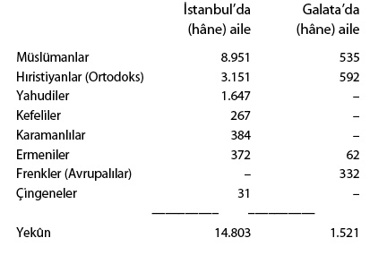

Fâtih Mehmed (1444-1446, 1451-1481): Konstantinopolis’in Fethi ve Merkezî İmparatorluğun Kuruluşu
İki bağımsız kaynak, Kritovoulos ve Tâcî Beyzâde Ca‘fer, İstanbul fethi kararının verildiği toplantıda, II. Mehmed’in şu noktalar üzerinde durduğunu söylerler: Gazâ, atalarımız gibi bizim de temel vazifemizdir, memleketimizin tam ortasını işgal eden Bizans, devletimizin düşmanlarını korumakta ve onları bize karşı kışkırtmaktadır. Osmanlı Devleti’nin güvenliği ve geleceği için bu şehrin fethi zorunlu olmuştur.
Bu sözler, Bayezid’in fetih politikasını yeniden ilân ediyor, İstanbul’un Osmanlı saltanat müddeilerini barındırarak devleti sık sık iç-savaşa sürüklediğini hatırlatıyor, aynı zamanda haçlı seferlerinin esas kışkırtıcısının Bizans olduğunu belirtmek istiyordu. Gerçekten, o zaman nüfusu 40.000’i geçmeyen, ticâreti tamamıyla Venedik ve Cenevizliler eline geçmiş bulunan bu şehrin doğal sahibi, Anadolu ve Rumeli’de kurulmuş olan Osmanlı İmparatorluğu idi. Bizans’ın 1423’te Selânik gibi İstanbul’u da Batılılara devr ü teslimi olasılığı uzak değildi. Böyle bir şey, Osmanlı İmparatorluğu’nun hiçbir zaman gerçekleşememesi sonucunu verirdi. Bir kelime ile İstanbul fethi, Osmanlılar için bir ölüm-kalım sorunu idi.98Fethin ayrıntılarına girmeden şu noktaları eklemek gerektir:
Türk karargâhında veziriâzam Çandarlı Halil, Batı Hıristiyan âlemini tahrik etmenin büyük tehlikelerine dikkati çekmekte devam ediyor ve bir uzlaşma tavsiye ediyordu. Buna karşı Zaganuz, Batılı devletlerin birleşemeyeceklerini, bir ordu gönderseler bile Osmanlı kuvvetlerinin üstün olduğunu ve İtalya’dan herhangi bir yardım gelmeden önce şehrin zaptolunabileceğini hararetle savundu. Başarı, işin bir an önce bitirilmesine bağlıydı. Venedik donanması yola çıkmıştı. Macarların Balkanlar’a girmek için hazırlandıklarına dair haberler geliyordu. Sultan, imparatora yaptığı teslim önerilerinin reddedilmesi üzerine, 29 Mayıs’ta genel saldırı ve yağma emri verdi. Zorla (kahren) alınan şehrin yağmasına sultan engel olamazdı. Bu şerî bir kuraldı. Fâtih, şehrin boşalmaması için fetihten sonra, fidyesini veren veya belli bir zaman içinde kaçtığı yerden geri gelen Rumların şehirde yerleşmesine izin verecektir. Onları bir zaman için vergiden muâf tuttu.99Fethin ertesi günü veziriâzam Çandarlı hemen azil ve tevkif olundu. Yerine Zaganuz geçti.
Anadolu ve Rumeli’de Merkezî İmparatorluğun Kuruluşu
İstanbul’un fethi, II. Mehmed’i bir anda İslâm âleminin en şanlı sultanı durumuna getiriyordu. Mehmed, kendisini artık evrensel bir imparatorluğun, Rûm (Roma) kayserlerinin vârisi olarak görüyor, mutlak bir iktidar sahibi olduğuna inanıyor, İstanbul’un her bakımdan tekrar bir cihan devleti merkezi haline gelmesini istiyordu. Genç ve muzaffer sultan, otuz yıllık saltanatını bu amacı gerçekleştirmeye harcadı. Kuşkusuz, Yıldırım Bayezid’in imparatorluğu çöktükten sonra Osmanlı İmparatorluğu’nu kesin biçimde yeniden kuran Fâtih’dir. O, son derece otoriter bir sultan olarak kendi kişiliğinde klâsik Osmanlı pâdişahını yaratmıştır.
Osmanlı sultanında evrensel egemenlik fikri değişik kaynaklardan gelir. Daha II. Murad devrinde yazılmış Yazıcızâde Ali’nin Selçuknâme’sinde Osman Gazî’nin sözde Oğuz Han’ın büyük oğlu Günhan’ın oğlu Kayı soyundan olduğu için ucdaki Türk beyleri tarafından üstün hükümdarlığa seçildiği kaydedilir ve şu iddia eklenir: “Günhan’ın vasiyyeti Oğuz türesi mucibince hanlık ve pâdişahlık Kayı soyu varken özge boy hanlarının soyuna hanlık ve pâdişahlık değmez.” Bu iddianın tarihi kaynağı ne olursa olsun Osmanlı hânedânı, egemenliğini meşrûlaştırmak ve özellikle Timur ve oğullarının himaye ve üstünlük iddialarına karşı çıkmak için bu görüşü benimsemiş, II. Murad’dan başlayarak paralarda ve silâhlarda Kayı boyu damgası kullanılmıştır.
Fakat aynı zamanda egemenliğin kaynağı hakkında İslâmî kavram da kuvvetle benimsenmiştir. Sözde, bir gazâ başarısı üzerine Selçuklu sultanı Osman’a beylik tevcih etmiş ve beyliğe ait sembolleri göndermiştir. (Selçuklu sultanı kendisi de bu otoriteyi Bagdad halifesinden almakta idi.) Evrensel otoritesini, İslâmî gazî sıfatına dayandırmak konusunda bizzat Fâtih’in ne kadar ileri gittiğine yukarıda işaret etmiştik.
İstanbul fethiyle beraber Fâtih üçüncü bir geleneği de benimsemiştir. Gerek Türk gerekse Bizans geleneğine göre, hanlığın veya imparatorluğun merkezine fiilen sahip olan kişi, imparatorluğun da haklı sahibidir. Fâtih, İstanbul’u aldıktan sonra kendisini Roma İmparatorluğu’nun tek meşrû vârisi saydı. Fâtih’in, Rum ve İtalyan nedimlerine eski tarihleri okutarak bu kavram hakkında fikir edindiğini biliyoruz. 1466’da G. Trapezuntios Fâtih’e şöyle hitap ediyordu: “Kimse şüphe etmez ki, sen Romalılar İmparatoru’sun. İmparatorluk merkezini hukuken elinde tutan kimse İmparator’dur ve Roma İmparatorluğu’nun merkezi de İstanbul’dur.” Aynı tarihte J. Languschi’ye göre “(Fâtih’in) iddiasınca dünyada bir tek imparatorluk, bir tek iman ve bir tek hükümdarlık olmalı imiş. Bu birliği kurmak için de dünyada İstanbul’dan daha lâyık bir yer yok imiş. Bu şehir sayesinde Hıristiyan dünyasını hükmü altına alabilirmiş.” Bu sonuncu cümle, Fâtih’in kayserlik geleneğini nasıl bir anlayışla benimsediğini açıklar. O, bu sıfatı siyasî bir araç, fetihleri için meşrû bir hareket noktası sayıyordu. O hanlık, gazîlik ve kayserlikte, her üçünde de evrensel hâkimiyetin yolunu görmekte idi. Çağdaşı Kemal Paşazâde “tedbîri cihangîrlik zikrinde idi” diye Fâtih’in gerçek emelini açıklar. Fâtih, aynı amaçla Rum Ortodoks Patriği’ni, Ermeni Patriği’ni İstanbul’da pâyitahtında yerleştiriyor, 1456 tarihinde Amurutzes’e bir dünya haritası yaptırıyordu. Özetle, Fâtih kendi şahsında Türk, İslâm ve Bizans geleneklerini bağdaştırarak klâsik Osmanlı pâdişahını yaratıyordu.
İlk hedefinin Roma İmparatorluğu’nu kendi hükmü altında yeniden canlandırmak olduğu, onun fetih plânlarından açıkça bellidir. İlkin, o, bilinçli olarak Bizans tahtına hak iddia edebilecek bütün hânedânları ortadan kaldırdı. Kemal Paşazâde’ye göre Fâtih “Urum sınıfında Tekvur adına bir adam” bırakmamaya çalıştı. Bu amaçla, Trabzon Rum İmparatorluğu’nu, Mora’da Paleologlardan olan iki despotu ve Paleologlar ile akrabalığı bulunan Cenevizli Gattilusi ailesini bertaraf etti. Tuna güneyindeki bütün Balkan yarımadasını doğrudan doğruya egemenliği altına sokarak buradaki hânedânları ortadan kaldırmaya çalıştı. Deniz kıyısındaki kalelerden, Mora’dan, Arnavutluk’tan ve Ege adalarından Venediklileri atmak için seferleri aynı amaçla yapmıştır. Nihayet, vaktiyle Bizans’a bağlı olan Kırım’ın güney sahilindeki limanları (1475) ve Güney-İtalya’yı işgal (1480) etmesi bu bakımdan dikkate değer.
Balkanlar’da tam egemenlik girişimi Fâtih’i, Tuna üzerinde Macaristan’la, Arnavutluk ve Yunanistan kıyıları ile Ege Denizi’nde Venedik’le karşı karşıya getirecektir. Papalık bu mücadelenin Hıristiyan dünyası ve özellikle İtalya için sonuçlarını göz önünde tutarak, Avrupa’yı bir haçlı seferinde bu iki devletin yanında mücadeleye sürüklemeye çalışacaktır.
Bu siyasî program, Fâtih’in eski bir İslâmî unvana yeni bir anlam katarak kullanmasında görülür. O, Sultanü’l-barrayn ve hakanü’l-bahrayn, yani Anadolu ve Rumeli ile Karadeniz ve Akdeniz’in hâkimi olmak iddiasındadır. Öte taraftan Fâtih, atası Yıldırım Bayezid ve II. Murad devrinde Osmanlı egemenliği altına girmiş bütün yerler üzerinde egemenlik iddia edecektir.
Fâtih ve Venedik, 1463’te çatışma kaçınılmaz bir hal alıncaya kadar savaştan kaçındılar. Fâtih, denizde zayıf olduğunu biliyordu. Venedik de Fatih’le 1454’te yaptığı antlaşma ile ticâret için elverişli koşullar elde etmişti. Ticâret serbestisi bağışlanmış, giriş ve çıkış gümrük vergisi ancak yüzde iki olarak tespit olunmuş, Venediklilerin haklarını korumak üzere İstanbul’da bir balyozun sürekli yerleşmesine izin verilmişti. Adalarda ve Kırım’da Cenevizlilere de harâc ödemek, yani Osmanlı yüksek egemenliğini tanımak şartı ile ticâret serbestisi verilmişti. Fâtih, ülkesi ve devlet hazinesi için Batı ticâretinin hayati önemini hakkıyla takdir etmekte idi. 1463’te Venedik’le bozuştuğu zaman Batı ticâretini idame için Floransalıları teşvik edecektir.
Fâtih, 1454-1463 yılları arasında Balkan egemenliği için en gerekli saydığı sorunları ele aldı. Kuzeyde 1444’te canlandırılan Sırp Despotluğu, Morava vadisinde Balkanlar’ın kalbine doğru Macar nüfuzunun sarkmasını sağlayan bir gedik teşkil ediyordu. Güneyde Mora Yarımadası Venedik eline düşebilirdi. 1454 ve 1455’te Sırbistan’ı, iki seferle devlete daha sıkı bağlarla bağladı. Fakat Belgrad kalesi önünde Macarlara karşı muvaffak olamadı (1456). 1458’de Despot Brankoviç’in ölümü üzerine Sırbistan yeniden Macarlarla Osmanlılar arasında bir mücadele konusu oldu. Memlekette her iki tarafı tutan partiler vardı. 1456 ve 1459’da iki sefer sonunda despotluk tamamıyla işgal ve Osmanlı Devleti’ne ilhak olundu. Osmanlılar, yerli askerî sınıfın önemli bir bölümünü kendi askerî kadrolarına aldılar ve yerli vergi kanûnlarını yerinde bıraktılar. 1458’e doğru Mora’da despotlardan Demetrios Osmanlı himayesini, Thomas ise Venedik himayesini sağlayarak şiddetli bir mücadeleye girdiler. O yıl ve 1460’ta yapılan iki seferle Fâtih Mora’yı işgal etti. Fakat denizden desteklenen sarp yerlerde inşa edilmiş Nauplia, Modon, Koron gibi kalelerde Venedikliler tutundular, 1463’te yerli Rumlar Argos’u Osmanlılara teslim edince saldırıya geçtiler. Korint Berzahı’nı tutarak yarımadayı ele geçirdiler. Bu durum üzerine savaş ilân olundu. 1463-1479 Venedik harbi, Fâtih için büyük bunalımlar doğurmuştur.
1463 yılında Bosna işgali Macaristan ile savaşı alevlendirmiş, Macarlar kuzey Bosna’da Jajce’de yerleşmişler, Venedik’le ittifak etmişlerdir. Müttefikler, Arnavutluk’un kuzeyinde 1443’ten beri isyan halinde bulunan İskender Bey’i kışkırttılar. Akkoyunlu hükümdarı Uzun Hasan ile Venedik arasında ittifak için elçiler gitti geldi. 1464’te Papa II. Pius, Avrupa haçlı orduları için Ancona’yı toplanma yeri olarak tespit etti ve ertesi sene buraya bizzat gitti. Müttefikler, Osmanlı İmparatorluğu’nu parçalamak için şimdi aralarında projeler bile yapmakta idiler. Venedik donanması Çanakkale Boğazı dışında dolaşıyordu. Fâtih bu büyük tehlike karşısında olağanüstü önlemler aldı: deniz üssü Gelibolu’yu korumak için Çanakkale Boğazı’nda karşılıklı iki kuvvetli kale, Kilidü’l-bahr ve Kale-i Sultaniyye’yi (Çanakkale) yaptırdı (1463-64 kışı). İstanbul’da Kadırga Limanı’nda yeni bir tersane kurdurdu ve donanmayı kuvvetlendirdi. Mahmud Paşa’yı güçlü bir ordu ile Mora’ya gönderdi. Mora geri alındı. Fâtih bizzat Arnavutluk’a iki sefer yaptı (1466 ve 1467).
Fâtih için bu savaş sırasında en çetin bunalım, Anadolu’da Karaman oğulları yüzünden patlak vermiştir. Karaman oğulları arasında taht mücadelesi Mehmed ile Doğu-Anadolu’da Türkmen Akkoyunlu hükümdarı Uzun Hasan’ı karşı karşıya getirdi.
Fâtih, nihayet Karaman ülkesini Osmanlı ülkesine kattı (1468). Fakat Toros dağlarında savaşçı Türkmen kabileleri Karaman oğulları idaresinde savaşa devam ettiler. 1471’de İran’ın da hâkimi olan Uzun Hasan, Orta-Anadolu işlerine karışıyor, Timur’un siyasetini izliyor, Osmanlılara karşı Anadolu beylerini himaye altına almaya çalışıyordu. Fâtih’in kovduğu beyler, bu arada İsfendiyar oğlu, Germiyan oğlu onun yanına sığınmışlardı. 1472’de Venedik, Kıbrıs, Rodos şövalyeleri ve Uzun Hasan arasında bir ittifak kuruldu: Uzun Hasan, Akdeniz kıyılarına 30.000 kişilik bir kuvvet yollayacak, Venedikliler de buraya ateşli silâhlarla donatılmış bir kuvvet göndererek onunla birleşeceklerdi. 1472’de Uzun Hasan, Tokat’ı baskınla yağma ve tahrip etti. Karaman–Akkoyunlu ordusu Akşehir’e kadar sokuldu. Her şeyin tehlikeye girdiğini gören Fâtih, bütün güçlerini seferber ederek ertesi sene Uzun Hasan üzerine yürüdü. Ordusu 100.000 kişi tahmin olunuyordu. Doğu-Anadolu’da Başkent (Otluk-beli) mevkiinde düşmanı tam bir bozguna uğrattı. Bu zafer, Fâtih için en tehlikeli bunalımı bertaraf etmiş oluyordu. Uzun Hasan Karahisar kalesini bırakarak ve bir daha Osmanlı topraklarına saldırmayacağına yemin ederek barış antlaşması yaptı. Bununla beraber kendisini savaş için teşvik eden Venedik elçilerini sarayına kabul ediyordu. Bunun üzerine Fâtih, Timur’un torunu Hüseyin Baykara’ya elçi göndererek Uzun Hasan’a iki taraftan hücum önerisinde bulundu. Bu sırada Gedik Ahmed Paşa, Torosları ve Akdeniz kıyılarını işgal ederek Karaman-ili fethini tamamladı (1474). 1466-1470 arasında Karaman oğullarını ve daha doğuda Dulgadır (Zulkadıriyye) Türkmen Beyliği’ni himaye eden Memlûklerle Osmanlılar sınırdaş olmuşlardı. Yıldırım Bayezid zamanından beri Karaman oğullarına karşı Osmanlıların müttefiki olan Dulgadır oğulları üzerinde nüfuz mücadelesi, daha bu devirde İslâm dünyasının bu iki büyük devletini Osmanlıları ve Memlûkleri harbin kenarına kadar getirdi. Mücadele II. Bayezid zamanında patlak verecektir (1485-1491 savaşı)
Orta-Anadolu sorununu böylece çözümleyerek Toros dağlarına kadar ilerleyen Fâtih, şimdi Venedik’le mücadeleyi daha sıkı biçimde ele aldı. Arnavutluk’ta Venedik elindeki İşkodra’yı şiddetle muhasara etti (1474-1478). Nihayet Osmanlı akıncıları Isonso’yu aşarak Venedik karşısında göründüler. Venedik barışa yanaştı. Yapılan antlaşmaya göre İşkodra, Akçahisar (Kruye), Limni ve Agriboz adaları Osmanlılara terk olunuyor ve Venedik ayrıca her yıl 10.000 altın ödemeyi kabul ediyordu. Venediklilere ticâret serbestliği eskisi gibi tanınmıştı. Venedik, yarımadada, Lepanto, Koron, Modon kalelerini elinde tutuyordu.
Akdeniz’in büyük deniz devletini barışa zorlayan Fâtih, şimdi Osmanlı donanmasına iki büyük hedef gösterdi: Akdeniz’in kapısı olan Rodos’un fethi ve iç koşulları o zaman bir istilâya elverişli görünen İtalya’nın istilâsı. 1480’de Mesih Paşa Rodos’a çıkarma yaparken büyük asker Gedik Ahmed Paşa Otranto’ya çıktı; Mesih yenildi. Fakat Gedik Ahmed, Otranto’yu aldı (11 Ağustos 1480) ve içine asker yerleştirdi. İtalya’da bir köprü-başı kurulmuştu. Gedik Ahmed ertesi yıl İtalya’da yapacağı büyük ölçüde fütuhat için ordusunu toplamak üzere Arnavutluk’a geri döndü. Papa, Roma’dan kaçıp Fransa’ya sığınmak için hazırlık yapıyordu.
Fâtih, Karadeniz’deki Ceneviz kolonilerini de ilkin harâca bağladı, sonra birer birer işgal etti (1459’da Amasra, 1461’de Sinop ve Trabzon, 1475 Kefe ve Sudak). Bogdan’ı harâca bağladı (5 Ekim 1455). En önemlisi, Altınordu’ya karşı himaye ettiği Kırım kabile aristokrasisinin işbirliği sayesinde Kırım Hanlığı’nı Osmanlı tâbiliği altına soktu (1475). Böylece Boğazlar’ın hâkimi olarak Karadeniz’i bir Osmanlı gölü haline getirmiş oluyordu. 1481 baharında 49 yaşında öldüğü zaman Mısır, İtalya ve Akdeniz seferleri yarım kalmıştı. Fakat yakını ve çağdaş tarihçi Hamza Bey oğlu Tursun Bey’in bile aşırı bulduğu gazâ faaliyetine hiç ara vermeden otuz sene içinde “iki denizin ve iki karanın” hâkimi olmuş, Anadolu ve Rumeli’de dört yüzyıl sarsılmayan Osmanlı İmparatorluğu’nun esas çekirdeğini vücuda getirmişti.
Fâtih’in İmparatorluğunu Örgütlemesi
Fâtih, imparatorluğun, yalnız ülke bakımdan yaratıcısı değildir. Osmanlı İmparatorluğu’nun siyasî, sosyal kurumlarını geliştirerek kesin şekillerini veren ve devletin gelecekteki siyasî gelişmelerini belirleyen de İstanbul Fâtihi’dir.
Fâtih, bütün devlet yetkilerini elinde toplayan ve imparatorluğu mutlak şekilde bir merkezden idare eden bir pâdişah örneğini yaratmak için, iktidarına karşı koyan ve koyabilecek tüm elemanları ortadan kaldırdı veya değiştirdi. Tahta çıkışında kendisine karşı isyan etmiş olan yeniçerileri şiddetle cezalandırdı (1451). Birçoklarını Ocak’tan attı, yerlerine saraydaki avcı bölüklerinden sekban adı altında yeni yeniçeri bölükleri koydu; yeniçeri ağalarını, kumandanlarını sekbanlar arasından seçmeye başladı. Sonra maaşlarını artırmak, silâhlarını yenilemek ve miktarlarını 5.000’den 10.000’e çıkarmak suretiyle bu askeri, imparatorluk ordusunun temel gücü haline getirdi. Her zaman için emri altında bulunan ve doğrudan doğruya şahsına bağlı olan bu kuvvet (yeniçeri ağasını doğrudan doğruya pâdişah seçerdi) sayesinde imparatorluk içinde veya uclarda çıkabilecek herhangi bir karşı hareketi önleyecek duruma geldi. Bu sayede bağımsız davranan güçlü uc beylerini sıradan sancak beyleri durumuna getirdi. Uclar, devlet için artık bir sorun olmaktan çıktı. Fâtih, fethettiği önemli kalelere garnizon olarak yeniçerileri yerleştirirdi (1460’ta Korint kalesine 400, 1461’de Trabzon kalesine 400 yeniçeri yerleştirmiştir). Bunlar, o bölgede valiye veya başka bir otoriteye tâbi değillerdi ve yalnız merkezden emir alırlardı. Bulundukları hisarlara kimse ayak atamazdı. Bu garnizonlar, bu yerleri düşmandan korumakla kalmazlar, şehirlerde Müslüman halktan gayrimüslimlere gelebilecek kötü hareketleri önler, orada pâdişah emirlerinin uygulanmasını sağlardı. Bir kelime ile, yeniçeriler eyâletlerde de pâdişah otoritesinin, merkezî otoritenin temsilci görevini üstlenmiş bulunuyorlardı.
Osmanlı idare sisteminde pâdişahın mutlak merkezî otoritesi hakkında Fâtih, seleflerinden çok daha üstün bir inanç besliyordu. Halktan biri gibi camide cema‘ât arasında namaz kılan veya saray kapısında halkın şikâyetlerini dinleyen babası II. Murad’dan farklı olarak Fâtih, sarayda dahi ancak belli kimselere kendisine hitap ve arz imkânı veriyor, dîvân toplantılarında hazır bulunmayarak devlet işlerini ancak özel bir arz odasında devlet erkânı ile müzakere ediyor, sanki kişiliği kutsal bir imparator gibi davranıyordu. II. Murad, devlet işlerinde karar yetkisini gerçekte eski vezir ailesine mensup ulemadan Çandarlı Halil’e bırakırdı. Çandarlı, 1430’da babası yerine kadıaskerlikten vezir olmuş, 1436’da veziriâzam olmuştu. 1453’e kadar on altı sene devletin gerçek sahibi idi. Fâtih, bu soylu veziri ancak İstanbul fethini başardıktan sonra bertaraf etmeye cesaret edebildi ve ondan sonra da, Karamanî Mehmed müstesna, bütün veziriâzamlarını kendi kulları arasından seçti. Böylece, veziriâzam pâdişahın mutlak vekili, onun emir ve arzularına mutlak surette bağlı birisi durumuna geliyordu; bunlardan en ünlüsü Mahmud Paşa’yı Fâtih bir bahane ile idam ettirmekten çekinmedi. Öbür taraftan o, mutlak vekili olarak veziriâzamın yetkilerini genişletmiştir. Sultanın eski hocası Molla Gürânî, kadıaskerliğinde, ilmiyeye ait tâ‘yinleri veziriâzama danışmadan yaptığı için istifaya zorlanmıştır. Beylik zamanından beri kadıaskerler, sultanın devlet işlerinin düzenlenmesinde ve teşkilâtlanmada en nüfuzlu yardımcıları olduğu gibi, veziriâzamların da çoğu kez ulemadan seçildiklerini biliyoruz. Sonradan Molla Gürânî, kendisine vezirlik teklif edilince, bu makamın saraydan yetişen kullara özgü olduğunu ileri sürerek red cevabı verecektir. Fâtih, veziriâzamlara, mâliyenin bağımsız sorumlu başı olan defterdar üzerinde de daha sıkı bir kontrol hakkı tanımıştır. Veziriâzam Mahmud Paşa’ya Rumeli Beylerbeyliği de verilerek, devletin en büyük eyâlet sipahi ordusunu kontrolü altında bulundurması sağlanmıştır.
Fâtih, veziriâzamlarını kullarından seçtiği gibi icraî ve siyasî iktidarın temsilcileri olarak idarenin her kademesinde yalnız kullarını kullanmıştır. Böylece valiler, timarlı sipahiler, vergi tahsildarları ve pâdişah yasağı’nı uygulamaya yetkili bütün icra ajanlarını kullardan seçmiştir. Buna karşı Şerîatın uygulanması yalnız ulema eline bırakılmıştır. Şerî ve örfî kanûnlara göre hüküm vermek yetkisine sahip olan kadılar, idarenin kontrolü görevini üstlenmişlerdir. Buna karşı onlar, hükümlerin yerine getirilmesini tamamıyla ehl-i örfe, yani pâdişahın icra yetkisini temsil eden kullara bırakmak zorunda idiler. Böylece, idarede yargı ve yürütme ayrılmış oluyordu. Bununla beraber ilmiye sınıfının bey sınıfına geçmesi, kadılardan bey ve beylerbeyi tâ‘yini, kanûna göre mümkündü.
Veziriâzam, pâdişahın mutlak vekili olarak, mâliye işlerini temsil eden defterdarın ve kanûnun uygulanmasından sorumlu kadıasker ve kadıların üzerinde idi, onlara nezaret ederdi; bununla beraber onlar kendi işlerinde bağımsız olup, doğrudan doğruya pâdişaha karşı sorumlu idiler. Öbür yandan, veziriâzam, yeniçeri ağasına doğrudan doğruya emir verme yetkisine sahip değildir. Ağa, doğrudan doğruya pâdişahtan emir alırdı. Bu suretle, veziriâzamın kontrolsüz bir şekilde devlet yetkilerine ve devlet kuvvetlerinin hepsine hükmetmesi tehlikesi bertaraf edilmiş, idarenin üç esas kolunda son söz pâdişaha bırakılmıştır. İdarenin bu üç esas kolu, öteki Orta-Doğu devletlerinde görüldüğü gibi, genel siyaset işlerinde vezâret, mâliye işlerinden sorumlu defterdarlık ve kanûnun uygulanmasıyla görevli kadıaskerliktir. Bunun yanında, merkezî hükümetin yazıişleri ve bürolarını temsil eden dördüncü bir sorumlu makam olarak nişancılık makamı vardır. Bu dört makam, dîvânın aslî üyeleridir. Fâtih Kanûnnâmesi’ne göre, pâdişah adına emir yazma yetkisi, genel işlerde veziriâzama, mâliyede defterdarlara, davalarda kadıaskerlere verilmiştir. Onlar haftada dört gün, arz odasında pâdişahın huzuruna girip işleri arz ederler. Pâdişah yalnız vezirleri, kadıaskerler, defterdar ve nişancıyı ayağa kalkarak kabul eder. Fâtih, kendisinden önce mevcut bulunan devlet teşkilâtını ve teşrifâtı, bazı ilâvelerle bir kanûnnâme halinde tespit etmiş, yeni duruma göre bu müesseselere kesin şeklini vermiştir. Şunu da belirtmek yerinde olur ki, esasen İslâmî anlayışa yabancı olan bu davranış, yani sivil bir kanûnnâme ilânı, Türk yasa ve töre devlet geleneğine bağlıdır. İmparatorluk kuran Türk ve Mogol hakanları, kendi yasa veya törelerini tespit ve ilân ederlerdi. Devlete töre vermek, onların en önemli egemenlik haklarından sayılırdı. İslâm dünyasına girince Türk hükümdarları, siyaset ve idarede nizam koyma hususunda mutlak yetkilerini bırakmadılar. Böylece Şerîat yanında yalnız hükümdarın iradesinden doğan bir hukuk, örfî kanûnlar meydana çıktı ve kanûn alanı gittikçe genişledi. İslâmî anlamda asıl kanûn, daima Şerîattı fakat bunun yanında kanûn adıyla çıkarılan kurallar, bugünkü anlamda nizam ve tanzimler şeklinde yorumlanmıştır. Bununla beraber, pâdişah sıfatıyla hükümdarın, buna mutlak şekilde yetkili olduğu, ulemanın buna karışmaya hakkı olmadığı fikri, Osmanlılarda 17. yüzyıl başlarına kadar egemendi. Fâtih, bu yetkiye dayanarak birçok kanûn ve yasaknâme çıkarmıştır. Bunlar, pâdişah emirleri şeklinde ilân olunurdu.
Bu suretle Fâtih’in idare ve hukuk sisteminde mutlak ve merkeziyetçi otoritesini gerçekleştirmeyi hedefleyen önlemlerini açıklamış bulunuyoruz. İdare ve icra alanında mutlakiyetin en etkin aracı olan kul (gulam) sistemine ileride (bkz. s. 205-216, “Osmanlı Devlet Yapısının Temel Örgütü: Gulam Sistemi’) ayrıca değinilecektir.
Fâtih’in kanûnların ve nizamların uygulanmasında ve devlet çıkarlarıyla ilgili meselelerde fazlasıyla sert ve şiddetli hareket ettiği bizzat çağdaşları tarafından ifade edilmiştir. Kanûnun uygulanmasında kendi oğulları için bile ayrıcalık tanımazdı. Kanûnun ve adâletin tam yerine getirilmesi, sonuçta hükümdarın iradesinin ve otoritesinin tam uygulanması demekti. Bununla beraber özellikle mâlî sahada aldığı ve sert bir şekilde uyguladığı radikal önlemlerin onun idaresine karşı derin bir hoşnutsuzluk yarattığı, ölümünde herkesin geniş bir nefes aldığı muhakkaktır. Sağlığında, İstanbul fâtihine ve imparatorluğun enerjik kurucusuna karşı kimse karşı gelecek güçte değildi. O, ulemanın bazı girişimlerine karşı şiddetle tepki göstermiştir.
Osmanlılarda saltanat değişikliğini düzenleyen bir kanûn ve gelenek yoktu. Daha doğrusu, eski Türk geleneğine göre hükümdar otoritesinin kaynağı Tanrı olduğundan, bu otoriteyi kimin alacağını tâ‘yin etmek de Tanrı’ya ait bir iş sayılırdı. Bunu Tanrı’nın bağışlayacağı kut tâ‘yin etmeliydi. Bu sebepten veliahd tâ‘yini de mümkün değildi. I. Mehmed’in veliahd tâ‘yin etmesi istenen sonucu vermemiştir. Kardeşlerden her biri saltanata aynı derecede hak sahibi sayılırdı. Bir pâdişah ölünce kardeşler arasında mücadele kaçınılmaz bir haldi ve bu durum bilhassa Bayezid’in oğulları ve torunları arasında devleti büyük buhranlara ve tehlikelere sürüklemişti. Müddeiler mağlup olunca yabancı hükümdarlar yanına kaçıp devlete daimi bir tehdit teşkil etmekte idiler. Bizans’a kaçan Osmanlı şehzâdesi Orhan, İstanbul surları üzerinde Fâtih’e karşı savaşmıştı. Fâtih, tahta çıktığında henüz memede olan kardeşi Ahmed’i “nizâm-i âlem” uğruna boğdurmuştur. Sonraları kanûnnâmesinde, sultan olanın kardeşlerini nizam-i âlem için idam etmesinin “câiz” olduğunu ve ulemanın bunu “câiz” gördüğünü ifade etti. Bu, aslında zorunlu bir kanûn değildir. Nizam-i âlem için zaruret halinde cevâz verilen bir fiildi. Fâtih bununla egemenliğin bölünmezliği ve devletin parçalanmazlığı prensiplerini her şeyin üstünde tuttuğunu göstermekte idi. Bu prensipler, Cem ile Bayezid, daha sonra II. Bayezid’in oğulları arasındaki mücadelelerde ortaya çıkacaktır. Askerin ve kamuoyunun onayladığı bu prensip, imparatorluğun birliğini korumaya yönelikti. 15. ve 16. yüzyıllarda nizâm-i âlem için kardeş katlini zorunlu bir önlem diye kabul eden Osmanlı kamuoyu, 16. yüzyıl sonlarında artık bunu iyi görmeyecektir. Birtakım özel koşulların da yardımı ile ekberiyyet, yani hânedânın sağ bulunan en yaşlı üyesinin saltanata geçmesi kuralı bir âdet olarak yerleşecektir.
Fâtih’in Mâlî Önlemleri
Fâtih’in mâliye ve toprak üzerinde siyaseti de devrimci bir karakter taşır. İmparatorluğun kurulması için Fâtih, memleketin kaynaklarını son kerteye kadar kullanmaya çalışmış, radikal önlemlere baş vurmuş, bu durum ölümünde şiddetle patlak veren bir sosyal-siyasî gerginliğe neden olmuştur. Fâtih’in aldığı başlıca mâlî önlemler şunlardır:
1. Para üzerindeki önlemleri: Yeni Akça çıkarmak ve eskisinin dolaşımını yasaklayarak kişiler elindeki eski akçayı darphanelerde beşte bir eksiğine, gerçek gümüş fiyatına almak. Her pâdişah tarafından cülûsu sırasında uygulanan bu yöntemin 865, 875, 880 ve 886 Hicrî yıllarında tekrarı, memlekette büyük hoşnutsuzluk doğurmuştur. Bu suretle devlet, nakit gümüş para üzerinden beşte bir vergi almış oluyordu. Bir de, bu kanûnu yürütmek için pâdişahın eyâletlere, şehirlere gönderdiği gümüş arayıcı yasak kulları evleri, tüccârın yüklerini, hanları araştırmaya ve buldukları eski gümüş sikkeleri hazine için almaya yetkili idiler. Fâtih’in gümüş para ayarını değiştirmesi, yerli ve yabancı tâcirlerin şikâyetine neden olmuştur.
2. Tekeller: Fâtih; tuz, sabun, mum gibi zaruri ihtiyaç maddelerini bölge bölge mukata‘a’ya, yani iltizama verme yöntemini ölçüsüz kullanmış, bundan hazine için büyük gelirler sağlamıştır. Onun bu mukata‘alara dair kanûnları, sert önlemler içermektedir. Âşıkpaşazâde (s. 198) bunları, Osmanlı ülkesinde o zamana kadar görülmemiş zulümler olarak protesto eder; aslen bir İtalyan Yahudisi olan Vezir Hekim Ya‘kub’un bu kötü yenilikleri memlekete soktuğunu iddia eder. Fakat imparatorluk ölçüsünde hoşnutsuzluk doğuran başka mâlî bir önlem, vakıf ve mülk topraklarının büyük bir kısmının devlet toprakları, mîrî arazi haline sokulması (neshi) ve timar olarak askerî sınıfa dağıtılmasıdır. Bu gibi toprakların çoğu aslında daha önce mîrî arazi olup çeşitli yollarla vakıf ve mülk haline gelmişti. Fâtih, bu gibi toprakların belge ve durumlarını araştırarak bazı esaslara göre bunları (meselâ binası yıkılmış vakıfları) mîrî toprak haline getirdi. Tursun Bey’e göre bu suretle 20.000 (?) köy ve mezra devlete mal edilmiş ve timar sipahilerine dağıtılmıştır. Bu reformun asıl amacı kuşkusuz asker dirliklerini artırmak, seferler için asker sağlamaktı. Bu reformun sonucu zarar gören geniş bir kitle, özellikle zâviye yöneten dervişler o zaman veziriâzam olan Karamanî Mehmed Paşa’ya karşı kin beslemeye başladılar. Babası ile arası açık olan Amasya Valisi Şehzâde Bayezid, karşıt olanların toplanma merkezi haline geldi. Evkaf ve emlâkın devletleştirilmesinden zarara uğrayanlar, özellikle ulema sınıfı, şeyhler, eski Türk Müslüman aileleri idi. Osmanlı toplumunda nüfuzlu ve zengin ailelerin, ellerindeki mîrî araziyi mülk ve vakıf haline çevirmeye çalıştıklarını (evlâdiye vakıfları), vakıf mütevellisi olarak kendi çocukları ve torunları için bu toprakları sağlam bir gelir kaynağı haline soktuklarını biliyoruz. Bizans devrinde aynı şekilde yerel senyörlerin ve manastırların devlet topraklarını, pronijaları kendi tasarrufları altına sokmaya çalışmaları ve devletin buna karşı boşuna mücadele etmesi Osmanlılardaki bu akımla kıyaslanabilir. Ancak Fâtih gibi mutlak otorite sahibi bir hükümdar, böyle bir reforma girişebilirdi. Memlekette yaygın hoşnutsuzluğun, II. Bayezid döneminde kökten karşı-reformların derin sebebi de budur.
15. Yüzyılda Ekonomi
15. yüzyılda Osmanlı Devleti’nin büyük askerî ve siyasî girişimlerini mümkün kılan şey, yeni siyasî nizam altında gelişen ticarî ve ekonomik hayat ve buna denk olarak artan devlet gelirleridir. Genelde Osmanlı Devleti, Levant sahasında Frenklerin (Avrupalıların) siyasî egemenliğine ve ekonomik bakımdan imtiyazlı durumlarına son vermeye çalışmıştır. Bu arada Fâtih, Bizans’ın çöküş devrinde Venedik ve Ceneviz’in temin ettikleri tam gümrük bağışıklığına son vermiş, onlardan gümrük almıştır. Bu gümrük Fâtih devrinde, bir tarihe kadar, yüzde iki gibi ufak bir oranda idi. Fâtih, bu oranı Müslümanlar ve harâcgüzârlar, yani İslâm devletine harâc ödeyen zımmîler için yüzde dört ve harbîler için, yani dâra’l-harb’e mensup olup ‘amânnâme (kapitülasyon) ile ticâret izni verilmiş olan yabancılar için yüzde beş olarak tespit etti. Bu siyaset, o zamana kadar imtiyazlı bir durumda bulunan ve Levant pazarlarını sömüren Frenk tâcirleri tarafından bir felâket gibi gürültü ile karşılanmış ve W. Heyd gibi büyük bir âlimi, Osmanlı devrinde Levant ticâretinin çöktüğü gibi abartmalı bir hükme sürüklemiştir. Osmanlı kaynaklarının, bilhassa Bursa kadı sicillerinin incelenmesi, bu hükmün yanlışlığını göstermiştir. Bu devrin karakterleri kısaca şöyle ifade edilebilir: Osmanlı siyasî düzeni birbirinden uzak geniş bölgeleri güvenlik altında birbirine yaklaştırmış, buraların birbirini tamamlayan iktisadî birliğine yol açmıştır. Fâtih devrinde süratle büyüyen İstanbul, daha Fâtih’ten önce uluslararası ticâret merkezleri haline gelen ve gittikçe büyüyen Bursa, Edirne, Gelibolu bu ticarî canlanmanın tanıklarıdır. Bölgelerarası ticârette Osmanlı tebaası olan Müslüman tüccâr, Rumlar, Ermeniler ve Yahudiler, İtalyanların yerini almıştır. Gümrük defterlerinde İtalyan gemileri ve tüccârından çok daha fazla bu unsurları görmekteyiz. Batı-Anadolu’da kuvvetli bir pamuklu sanayii, Ankara ve Tosya’da sof sanayii, Bursa ve İstanbul’da ipekli sanayii (1502’de Bursa’da 1.000 kadar ipekli tezgâhı sayılmıştır), Avrupa ve Kuzey memleketlerine önemli miktarda ihracat yapabilmekte idi. İstanbul’da ve Selânik’te çuha sanayii, Edirne’de deri işleri ve ayakkabı sanayii, Yanbolu’da aba-kebe yapımı Balkanlar’da önemli sanayi kolları idi.
Öte yandan Bursa, 15. yüzyılda İran’dan Avrupa’ya ihraç edilen değerli Esterâbâd (Staravi) ipeğinin uluslararası antreposu haline gelmişti. Her yıl buraya devamlı 5-6 ipek kervanı gelirdi, Maringhi’ye göre her kervan ortalama 200 yük ipek getirmekte idi. Floransa’da bu ticâretten yük başına 70-80 altın kazanıldığı hesaplanmıştır. Bursa gümrüğüne 1479’a doğru ipekten yılda yaklaşık 15.000 altın duka gelir gelmekte idi. Bursa doğudan Müslüman tüccâr kervanlarının eriştikleri en batıda bir merkez olarak, Arabistan ve Hind mallarının da bir antreposu haline gelmişti. Daha 1432’de B. de La Brocquière, Peralı Ceneviz tacirlerin Bursa’dan baharat satın aldıklarını tespit etmiştir. Maringhi, baharatın Bursa’da pahalı olduğunu söylemekle beraber, bu madde Eflak, Bogdan ve Lwow’a Bursa’dan sevk olunmakta idi. Floransalılar, Bursa’da baharatı kumaşla değişmeyi Mısır ve Suriye’de altınla almaktan daha kârlı saymakta idiler. Nihayet Fâtih devri sonlarında Hindistan’da Behmenîlerin meşhur veziri Mahmud Gâvân, Bursa’ya kendi ajanları ile muntazaman Hind malları göndermekte idi. Bu Hind ajanları, Bursa’dan Balkanlar’a geçmekte idiler. Bursa aynı zamanda kıymetli Avrupa yünlülerinin doğu memleketlerine sevk edildiği bir merkezdi. İpek tâcirleri dönüşlerinde İran’a Bursa’da aldıkları bu yünlüleri götürmekte idiler. Bursa’nın bu devirde nüfusu 50.000’den aşağı değildi.
Baharat, boya ve Hind kumaşları gibi değerli maddeler, genellikle Şam–Adana–Konya üzerinden Anadolu’yu çapraz kesen eski ticâret yolu üzerinden kervanlarla gelirdi. İkinci bir yol, Mısır ve Suriye limanlarından Antalya’ya, oradan Bursa’ya gelen deniz yolu idi. Bu kısa ve ucuz yol, bilhassa ağır ticâret malları için kullanılırdı. Anadolu’dan Mısır’a külliyetli miktarda ağaç, tahta, demir Antalya ve Alâiye limanlarından sevk olunurdu. 1480’lerde bu ticâretle uğraşan Bursalı Türk tâciri Hayreddîn’in yarım milyon akça sermaye ile bir şirket kurmuş olduğunu biliyoruz. Selçuklu Anadolu’sunda olduğu gibi, 15. yüzyılda da Müslüman Türklerin sanayi ve ticârette birinci planda faaliyette olduklarını, büyük şehirlerde hükümet karşısında nüfuzlu bir sınıf teşkil ettiklerini görüyoruz. Gayrimüslim zımmîlerin, Ermeni, Rum ve Yahudilerin Osmanlı İmparatorluğu’nda ticârette egemen olmaları ancak 16. yüzyıldan sonra Batı-Avrupa ticâretinin gittikçe daha büyük bir önem kazanması ile mümkün olmuştur.
İstanbul’un Yeniden İnşası
Fâtih’in en büyük kaygısı, İstanbul’u dünyanın siyasî ve iktisadî merkezlerinden biri, gerçek bir metropolis haline getirmek, nüfuslandırmak, imar etmek ve kalkındırmak olmuştur. İstanbul, fetihten önce vücutsuz bir baş gibiydi. Şehrin nüfusunun 40.000’e kadar düştüğü iddia edilmiştir. Patrik Gennadios’a göre, İstanbul, imparatorluğun son günlerinde, “fakir ve büyük kısmı gayrimeskûn bir harabeler şehri” idi. Fâtih, şehri yağmasız almaya çalışmış, fakat başaramamıştı. Fetihten sonra dağılan ahaliyi toplamaya çalıştı. Silivri ve Galata’dan nüfus getirip yerleştirdi. Sürgün usulüyle şehre nüfus getirip yerleştirme işini saltanatının sonuna kadar uyguladı. Foça’dan, Argos’tan, Amasra’dan, Trabzon’dan, Mora’dan, Taşoz ve Samotraki adalarından, Midilli ve Agriboz’dan, Kefe’den şehre Rum, İtalyan Yahudi nüfusu getirip yerleştirdi. Almanya ve İtalya’dan Yahudilerin gelmesini teşvik etti. Konya, Aksaray, Larende ve Ereğli’den mühim miktarda Müslüman Türk halkı sürüp getirdi. Şehrin etrafındaki bölgede savaş esirlerinden yerleştirerek 100 kadar köyü ihya etti. Şehre gelen yolları ve köprüleri tamir ettirdi. 1455 kışında meşhur Kapalıçarşı’nın çekirdeği olan Büyük Bedestan’ın yapılmasını emretti. Keza o yıl, şehre bol su getirtmek için su yollarının onarımını emretti. Fâtih şehirde yaptırmakta olduğu inşaatı bizzat teftiş ederdi. Şehrin göbeğinde yaptırdığı ilk sarayı (Eski Saray) sonra uygun bulmadı. Sarayburnu’nda inşa ettirdiği Yeni Saray (Topkapı Sarayı) 1464’te tamamlandı.
İstanbul’un yeniden inşasında esas rolü, bütün Osmanlı şehirlerinin kuruluşunda ve gelişmesinde olduğu gibi, vakıf müessesesi oynamıştır. Bugün devlete ait birçok kamu hizmetlerini, yani halka açık binalar, ibadet, ticâret yerleri, seyyahları barındıracak imâretler, çeşme ve hamamlar, köprüler, mektep ve hastaneler inşası ve idamesi işini, vakıf müessesesi yerine getirmekte idi. Osmanlı Devleti’nin kamu hizmetleri fikrinden uzak olduğu, yalnız tebaayı istismar fikrine bağlandığı iddiası tamamıyla yanlıştır. Reâyanın refahı bir din vazifesi olarak benimsenmiştir. Fâtih’in kendi vakfiyesinde şunlar yazılıdır:
Hüner bir şehr bünyâd etmektir;
Reâyâ kalbin âbâd etmektir.
Osmanlı Devleti, vakıf müessesesini bu doğrultuda en ziyade geliştirmiş bir İslâm devleti sayılabilir. Devlet bütçesinden 1528’de vakıf ve mülklere ayrılan para genel gelirin yüzde 16’sını alıyordu. Osmanlılar, vakıfları sıkı devlet kontrolü altına almıştı. Eskiden olduğu gibi, kişiler şimdi sadece kadı’nın tanzim ettiği vakfiye ile vakıf tesis edemezlerdi. Bunların mutlaka merkezî hükümete tescil ve tasdik ettirilmesi lâzımdı. Her pâdişah culûsunda bu vakıf belgelerini kontrol ettirir, kendi adına berat verir veya nesh ederdi. Hıristiyan vakıfları da aynı kontrole tâbi idi. Fâtih, Trabzon’da manastırlara ait vakıfları kaldırmış, fakat Athos (Aynaroz) dağındakileri tasdik etmişti.
İstanbul’un imarından önce Bursa, İznik, Gelibolu, Edirne, Filibe, Sofya, Serez, Ferye, Üsküp, Yenişehir, Manastır, Silistre gibi şehirlerin Osmanlı idaresinde birer Türk Müslüman şehri olarak süratle gelişmesi ve imarı nasıl vakıf sayesinde olmuşsa, İstanbul da aynı yolla bir Türk şehri olarak yeniden imar edilmiştir. İstanbul imarı hakkında Türk şehir yapıcılığının bir örneği olarak biraz ayrıntı vereceğiz.
Fâtih, 1459 yılında bütün büyük ricali toplayarak şehrin değişik yerlerinde vakıflarla imâretler, imar merkezleri vücuda getirmelerini istedi. Kritovoulos’a göre Fâtih, kendisi Yeni Saray’la büyük camiinin inşasını bu tarihte emretti. Veziriâzam Mahmud Paşa, sultanı izleyerek İstanbul’un en gözde alışveriş merkezi olarak bugüne kadar devam eden Mahmud Paşa sitesini vücuda getirdi. Burada cami, medrese, imâret yaptırdı ve bu hayır tesislerine gelir temin etmek üzere hamam, çarşı ve han gibi ticarî tesisler yaparak vakfetti. Aynı şekilde, zamanla diğer vezirler de bugün İstanbul’un belli başlı mahallelerini teşkil eden siteler kurdular. Bunların en mühimleri Hoca Paşa, Gedik Ahmed Paşa, Murad Paşa, Davut Paşa mahalleleridir.
Fâtih kendisi, yaptırdığı camiin etrafında meşhur sekiz (Semâniye) medresesini, çocuklar için bir mektep, Dara’t-tâlim, bir hastane (Dâru’ş-şifâ), fakirler ve yolcular için bir imâret inşa ettirdi. İstanbul’da yaptırttığı veya kiliseden çevirttiği dokuz cami ve onlara bağlı kurumları devamlı şekilde tamir ve idame etmek, personelin maaşlarını ödemek üzere İstanbul’da devlete ait arazi, ev ve dükkân kiralarının önemli bir kısmını, İstanbul dışında otuz beş köyü vakfetmiştir. Bundan başka İstanbul’da inşa ettirdiği Büyük Bedestan (Bezzâzistan), Sultan Pazarı, Beylik Pazarı’nın ve başka ticâret yerlerinin, dört hanın, 14 hamamın, 54 değirmenin gelirlerini yine aynı amaçla vakfetmiştir.
Fâtih’in yaptırdığı hastanede (Dâru’ş-şifâ) muhtaç kimseler bakılır ve bedava ilâç verilirdi. İçinde iki âlim ve tecrübeli doktor, bir kehhâl (göz doktoru), bir cerrâh (operatör), bir eczacı hazır bulunurdu. Ecza mahzeni muhafızı ve idare işlerine bakan bir emîn ile vekili, iki hastane aşçısı, kapıcı ve iki hastabakıcı hastane personelini teşkil etmekte idi. Vakfiyede hastalara tatlı muamele olunması özellikle işaret olunmuştur.
İmparatorluğun en yüksek ilim müessesesi olarak yaptırılan Semâniye medreselerine gelince, buraya yetkinlik gösteren her Müslüman çocuğu kabul olunurdu. Talebenin bütün masrafları vakıf gelirinden sağlanırdı. Yüksek dinî ilimlerle beraber aklî ve naklî ilimler (tababet, astronomi, matematik) okunurdu. Fâtih, bu medreselerin teşkilâtlandırılmasında Türkistan’dan getirttiği meşhur astronomi âlimi Ali Kuşçu’dan istifade etmiştir.
Her sene sonunda müderrislerle personelin ileri gelenleri bir toplantı yaparlar, işlerin vakfiyeye göre yürütülüp yürütülmediğini kontrol ederler, kusuru görülenleri cezalandırırlardı. Vakıf kendi idarî ve mâlî işlerinde özerk olup yılda bir hesaplar yerel kadı tarafından kontrol edilirdi. Vakfın genel nâzırı bizzat pâdişahtı.
Bütün bu tesislerin ekonomik önemi büyüktür; şehrin büyümesi ve kalkınmasında başlıca rolü oynamıştır. Yalnız Fâtih Camii etrafında 286 dükkândan oluşan bir çarşı vücuda gelmişti. Bu dükkânların kira bedeli vakfa aitti.
Fâtih, Ayasofya Camii’ni tamir ve içindeki hizmet sahiplerinin masrafını karşılamak üzere 1350 dükkân, 51 hamam, 987 ev, 32 bozahane, 22 aşhane (lokanta) tahsis ve vakfetmişti. Bunların yıllık geliri takriben 13.000 Venedik dukasına varmakta idi.
İstanbul Nüfusu
Kadı Muhyiddîn’in 1477’de yaptığı bir sayıma göre İstanbul nüfusu o tarihte şöyle idi:

Aynı sayıma göre, 1477’de İstanbul’da 3.667 dükkân, Galata’da 260 dükkân vardı. Bu sayıma askerî sınıfın konmadığı unutulmamalıdır. İstanbul nüfusunu 1530’a doğru, Ö. L. Barkan 400-500 bin, F. Braudel ise 16. yüzyıl sonuna doğru 700.000 tahmin etmektedir. Fâtih’ten bir yüzyıl sonra İstanbul, onun tasarladığı gibi gerçekten bir dünya metropolisi haline gelmiştir (1509’daki şiddetli zelzelede 109 cami ve bu arada birçok Bizans ve antik dönem eseri harap olmuştur).
98 6 Nisan-29 Mayıs 1453 arasında 54 gün süren İstanbul kuşatması hakkında teferruatlı tasvirler içinde hâlâ en etraflı eserler E. Pears’in The Destruction of the Greek Empire (Londra, 1903) ve Agostino Pertusi’nin La Caduta di Constantinopoli (Verona, 1976) adlı çalışmalarıdır.
99 M. Kritovoulos, History of Mehmed the Conqueror, Princeton, çev. C.T. Riggs, Princeton, 1954, s. 83.